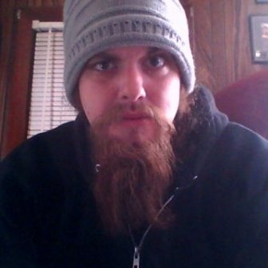
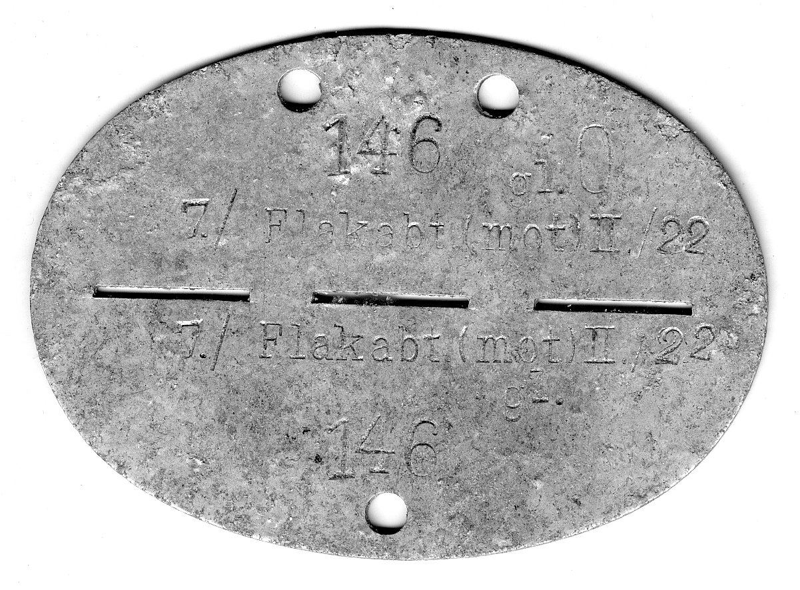
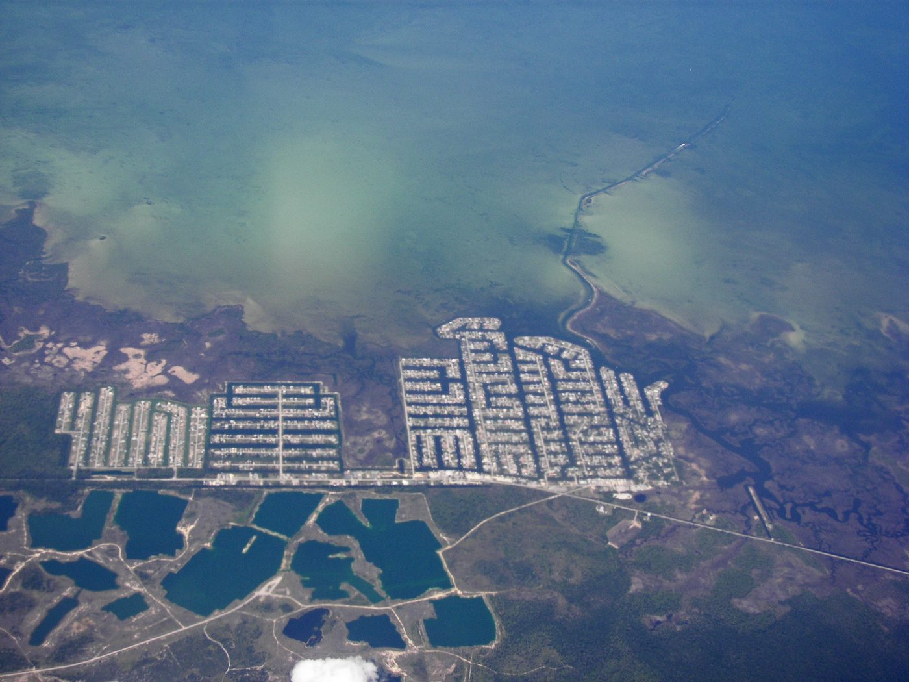

Built on Rock and Roll
Twenty-six years, one moral compass, and a hacker from Hernando County.

The last closing ceremony DerbyCon ever held was on September 8th, 2019, at the Marriott in downtown Louisville. Malcolm R. Smith almost missed it.
He'd fallen down an escalator the night before — blackout drunk, alone, and lucky. He woke up bloodied and bruised and made it into the hall just in time to hear the organizers tell a story about “an anonymous person” who'd taken a bad fall the night before.
The whole room laughed. The whole room knew.
Nine years earlier, DerbyCon had started as an idea in a Louisville pizza shop. In January of 2019 the founders announced the ninth year would be the last, citing a small but vocal group creating negativity and disruption in the community they'd built. So the laugh Smith walked into wasn't just any laugh. It was one of the last things that room ever did together — and he was the joke.
He tells the story on himself, first, every time. That's the tell. That's the whole man in one anecdote.
The Tools Came First. The Ethics Came Later.
In 1999, mobman released Sub7 — a remote access trojan that let you reach across the internet and into a stranger's computer. Malcolm Smith was nine years old, and his older brother was a criminal black hat hacker.
The brother handed it down. He told him to use it sparingly, if at all. It didn't take.
“I wasn't fully taught the implications of what I was doing,” Smith says now. What he did with it was what a nine-year-old does with a loaded thing he doesn't understand: he opened chat boxes people couldn't close. He flipped their screens upside down. He made jokes. Mostly, the person on the other end just powered the machine off and walked away.
Nobody got hurt. He knows that, and he's checked the memory more than once.
But he was hooked. He learned IRC. He learned AIM. He joined message boards and mailing lists he never read, pirated music, sat in chatrooms talking about systems with people twice his age. He was a kid with access and no framework — the exact profile the industry now spends millions trying to catch early and redirect.
Nobody redirected him. He had to do it himself, and it took him the better part of two decades.
The House He Grew Up In
Access wasn't the only thing that came early.
Smith grew up with mental abuse in the household, and he carried the shape of it out the door with him. He landed in an abusive relationship as a young man. The friends closest to him weren't friends. His circle was tearing him apart and he couldn't see it, because none of it registered as abnormal.
“I felt like these relationships were normal,” he says. “And the problem was me.”
This is the part of the story most people in security leave out of their conference bios. Smith puts it up front, because what happened next doesn't make sense without it.
2011: A Dead Laptop and a Woman Named Sarah
He was twenty-one, working to get into a shop called Computer Corrections. His boss, Sarah, handed him an Alienware gaming laptop. A customer had spilled soda across the keyboard and it wouldn't boot.
Fix it, she said, and you have the job.
He took the whole machine apart. Cleaned the motherboard down with isopropyl alcohol. Put it back together. It booted.
That's the moment the fifteen-year clock starts — and it's worth noting that when Smith says he's been in the security community fifteen years, he's counting from here, not from Sub7. Not from the day he got access. From the day somebody paid him to fix something.
Sarah has since sold the shop. She still lives in the county.
2013: Tampa, Then Nashville
On June 1st and 2nd, 2013, the first National Day of Civic Hacking ever held took place across more than a hundred locations nationwide. Tampa was one of them, and Malcolm Smith — twenty-three years old, first conference of his life — was in the room.
He hit it off with the organizer, who became a lifelong contact. That man told him to get himself to Nashville.
From October 23rd to 27th, 2013, at the Hotel Preston in Nashville, SkyDogCon ran its lockpick village, its badge hacking, its capture the flag, and its talks. Smith had turned twenty-four nineteen days earlier. He walked in and the conference's founder — known to everyone in the scene simply as SkyDog — took him under his wing on the spot.
SkyDog asked him a question nobody had asked him before: what do you want to get out of being here?
Thirteen years later, that relationship is still running. Friends, outreach, small donations toward research, and — Smith is specific about this being the important part — emotional support and mentorship. What to do. What not to do. And above all: stay calm.
“He told me I could do and be anything,” Smith says.
The security community did a full 180 on him. It taught him he had worth, that he had a good moral compass, and that he was supposed to use it.
The Dog Tags
Somewhere in those years, two men Smith had known only as heroes became actual friends: Billy Gardner and Johnny Long.
One year Johnny Long couldn't make it to SkyDogCon. He sent dog tags instead, made for Smith, delivered in his absence. Smith wears them everywhere.

There's a symmetry there that Smith didn't clock until it was pointed out to him. Johnny Long wrote Google Hacking for Penetration Testers — he is, more or less, the origin point of “Google Fu” as a serious discipline in security. And Smith's entire method, the thing he's done for twenty-six years, is exactly that: read ferociously, query relentlessly, string information together until it becomes an answer.
He wears the tags of the man who wrote the book on the only technique he ever really needed.
He Was Never a Programmer. He Says So First.
“I was always a script kiddie, a repair technician,” Smith says. “But I knew so much.”
He knew how systems worked. How hardware worked. How scripts worked and how to run them. What he never did was write them — and he's clear-eyed about why.
He was close enough to the community that by the time he needed a tool, somebody had already built it. He'd just use it.
Ask him whether the industry gatekept programming from him and he rejects the premise outright. “Nothing was gate kept from me. It was always there, based on my ability to read and learn the material. It was a matter of convenience and being lazy. I'm notorious for loving both.”
That's an unusually honest answer from a man writing his own profile.
Thirty-Four, and the Tool Arrives
Then AI hit, and Smith was thirty-four.
For a man whose whole craft was querying, prompting, and synthesizing — twenty-six years of Google Fu with no compiler in sight — it was the perfect tool arriving at the exact moment the method was ready for it.
He's precise about what changed, and it isn't what you'd expect. “It's not so much about what I built, but what I discussed,” he says. Through those conversations he builds corpora of data and relational queries that make his tools robust and concise. Research, development, debugging, cloud, marketing, sales, management — one man carrying every function.
That's what he means when he calls himself CISO of Savvy Security. Not a title over a team. A description of the range.
What He's Actually Shipped
Two things are live right now, both free, both open source, both with Savvy Security's name on them.
The US Cyber Resource Map puts over 5,000 US cybersecurity community resources on one interactive map across five regions — hacker cons, DEF CON groups, 2600 meetings, OWASP chapters, hackerspaces, ham radio clubs, cyber schools, library makerspaces, youth STEM programs, certification testing sites, and government hubs. It's built for students and lifelong learners trying to find their people. Florida gets its own deep-dive.
It is, in other words, the map that nine-year-old Malcolm Smith did not have.
Path to Freedom maps homelessness and poverty resources across Florida, county by county — food pantries, shelters, clothing and thrift vouchers, pet food, transportation, clinics and mental health, free computers and workspace, shower access, and the coordinating agencies that tie them together. It pulls live job listings through CareerOneStop. And it does something most resource maps don't bother to do: where a shelter's address is deliberately unpublished to protect the people inside it, the map says so and gives you the hotline instead.
That's a security professional's instinct applied to a humanitarian problem. Threat model first.
The Bus App
The one in progress is a routing app covering Hernando, Pasco, and Citrus counties.
Right now Citrus and Hernando have no reliable app at all. Pasco has one, and it covers only Pasco — which is not much use to anyone whose life crosses a county line, which is most people's lives.
Smith is building the thing that links all three. For free.
Ask him who it's for and he doesn't say “users.” He says: the shift worker. The elderly. The impoverished. The guy without a car. Kids trying to get to the library, or the parks, or the springs.
A man pitching universities and federal research partners, quietly building free transit infrastructure for his neighbors, because nobody else was going to.
What Savvy Security Is
Savvy Security LLC is a research and development firm operating as a private think tank on United States government problems. It is Malcolm Smith and a network of contacts across the security and intelligence communities who will not be named.
The current work is pending. Proposals are in motion, and he's closing in — working alongside local universities and research firms. He'll be under NDA soon enough, and he isn't going to say more than that.
The Brother
He's alive. He's suffering from addiction and paranoid schizophrenia. He believes the system is out to get him, and Smith — who does not sugarcoat this — thinks it probably is, because his brother was a notorious criminal and a womanizer who has never stopped.
Smith would call the law on him tomorrow if he had proof. He says so plainly and without pleasure.
But that isn't where he leaves it. Everything Smith built, he built in the opposite direction from the man who handed him Sub7 in 1999 — same starting tools, same starting knowledge, opposite compass. The work is public. Anyone can find it.
“I hope to God he sees what you can do,” Smith says, “when you get right with Christ and the LAW.”
That's not hatred. That's a man who still wants his brother back and has stopped expecting it.
The Part He Almost Didn't Say
Late in a long conversation, buried in a paragraph about management philosophy, Malcolm Smith said this:
Colleagues. Friends. Family. The woman who is going to be his wife.
That's the honest center of this whole story, and it deserves to be said out loud: a kid raised in an abusive house, who found his worth in a community of hackers at twenty-three, did not come out of it repaired. He came out of it working on it. Still is.
What security taught him, he says, was to forgive and forget. To take on accountability. To move forward and build relationships with the right people. And to stop keeping score.
It shows up in how he runs a team. “The worst professional mistake you can make is not seeing your team for what they're worth,” he says. People's problems are the company's problems, and they're allowed to bring them to work, because that's human. Tell him what's going on and you'll work through it together.
He'll also tell you where he landed on the drinking. Have a drink. Have a good, safe time. Know your limit. Blackout is never the move, and don't live with stress.
Then he says the thing that ties it together, and it's the closest he comes to a philosophy:
“Community problems are my problems. And when I fix those, I fix myself.”
The Gulf Coast
He finally feels like a genuine node on the Gulf Coast of Florida — one of the most prolific white hats to come out of Hernando County.
It took twenty-six years. He was handed the tools at nine and the ethics came later, and the whole arc of his life has been getting them into the right order. There was a brother who showed him exactly what not to be. A boss who bet a job on a soda-soaked laptop. A conference organizer who asked him what he wanted. A hero who sent dog tags when he couldn't come himself. A room in Louisville that laughed at him and was still, unmistakably, his room.
And what he'd want you to take from it is not that he's exceptional. It's the opposite.
Be consistent. Be persistent. Keep your moral compass pointed the right way and use it. Fix what's broken in front of you, especially when nobody's paying you to.
Anyone can make it. He'd know.

✦
Malcolm R. Smith is the founder of Savvy Security LLC. The US Cyber Resource Map and Path to Freedom are free and open source at malcolm1014.github.io.